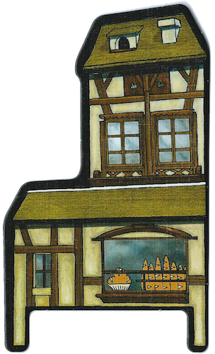

<div class="infoTitle">
    <h2>The Bakery: Occupied by the Baker</h2>
</div>
<div class="infoImage">
    
</div>
<div class="infoText">
    <h3>(Permanent Power)</h3>
    <ul>
        <li>Each <b>night</b>, the Baker opens his eyes immediately after the Moderator finishes saying, “Werewolves go to sleep!” After a few seconds, the Moderator asks the Baker to go back to sleep.</li>
    </ul>
</div>